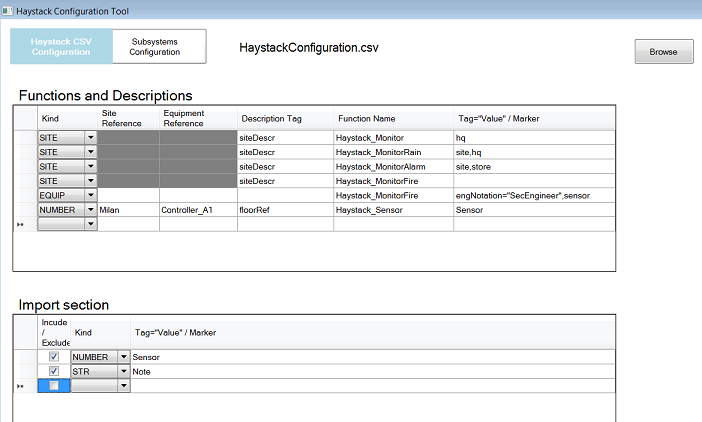

Configure the Haystack Discovery Rules
- You want to configure a set of filtering and mapping rules to control the acquisition of Haystack entities into System Browser.
- The HaystackAdapterConfigurator tool is open.

- On the upper side of the window, click Haystack CSV Configuration.
- Two data sections display:
- Functions and Descriptions section
- Import section
- The two sections define two corresponding groups of rules that enable you to:
- Control the configuration of Description and Functions for specific Haystack entities (Site, Equip, Bool, Number, Str) in Desigo CC.
- Filter in or out specific Haystack entities.
For more information, see Haystack Discovery Rules and CSV Format. - Configure the rules as necessary and click Save As… to save the configuration into the HaystackConfiguration.csv file.
- The adapter takes into account the new configuration and updates the Haystack objects in System Browser.
- Check the new System Browser configuration. If necessary, repeat the steps above to refine the configuration.